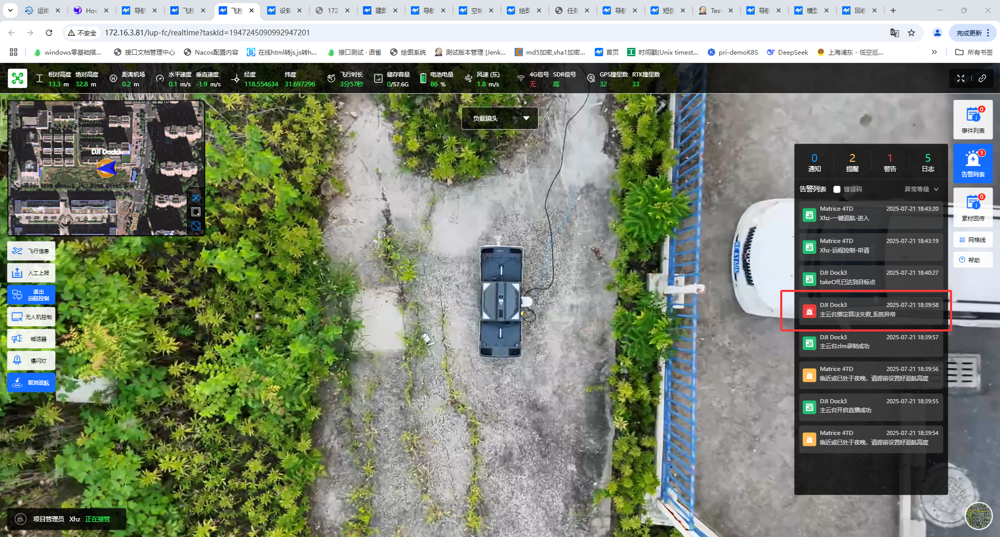

测试出现的问题：
1、超脑版：使用本地知眸服务后无法调用，绑定算法失败。
原因：使用知眸服务中的变量未被用户名账户密码替换，调整后可用
需要兼容支持B121、S2.11.0版本内容
标准版和超脑版当前区别：
运维层面：1、操作系统版本不一样。
超脑版用的是麒麟os，标准版用的龙蜥系统
2、安装的服务不一样：
超脑版安装了本地odm服务和知眸AI服务，标准版没有
研发层面：做兼容超脑版需要兼容以下页面功能
1、代码做了兼容的，一套代码支撑两个版本的
2、脚本上根据剩余内存 大于等于 64GB 才会安装 webodm
